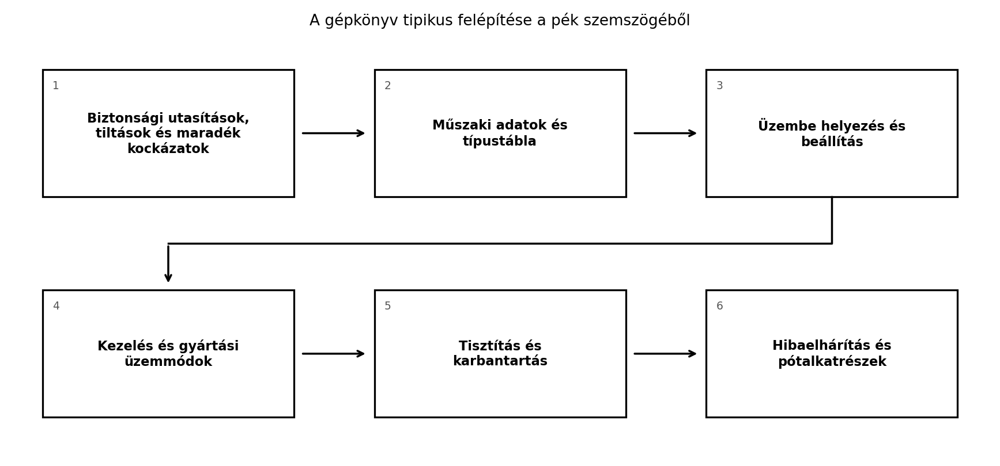

Hajnalban átveszed a dagasztógépet. Az előző műszak egyik dolgozója azt mondta, hogy a hajtóműnél „furcsa kattogást” hallott. A gépkönyvben van egy robbantott ábra, egy metszeti rajz és egy hibaelhárító táblázat. Ha ezeket nem tudod olvasni, akkor vagy rosszul nyúlsz a géphez, vagy úgy próbálod „megjavítani”, hogy közben veszélyezteted magad és a terméket. A géprajz és a gépkönyv nem a tervezőmérnök magánügye: ez a te mindennapi munkád biztonsági és karbantartási térképe.
Ebben az alfejezetben megtanulod, hogyan olvassunk le egy sütőipari gép műszaki rajzáról és gépkönyvéből annyit, amennyi a kezeléshez, tisztításhoz, egyszerű hibafelderítéshez és a karbantartóval való pontos kommunikációhoz kell.
Képzeld el, hogy a dagasztógép gépkönyvét lapozgatod. Először egy működési vázlatot látsz: a hajtómotor, az ékszíj, a hajtómű és a keverőcsiga egyszerű, jelképes ábrákon követik egymást. Utána egy robbantott ábra mutatja, hogyan szerelték szét a csigát, a csapágyat és a tömítést. Egy metszeti rajzon pedig az látszik, hogy a gép belsejében hol találkozunk a tésztával érintkező felülettel.
A gépkönyv nem reklámprospektus. Ez egy olyan műszaki dokumentum, amelyet a gyártó a géphez ad: biztonsági, kezelési, tisztítási és hibaelhárítási utasításokat tartalmaz.

Definíció. A műszaki rajz olyan, szabványos jeleket és vonalakat használó ábrázolás, amely egyértelműen megadja az alkatrész, gép vagy berendezés alakját, méreteit, anyagára utaló jeleit és összeszerelési viszonyait.
A pékségben nem kell géprajzot készítened, de olvasnod kell. A gyártók azért használnak egységes vonalfajtákat, méretmegadást és jelöléseket, hogy egy Németországban gyártott dagasztógép rajzát egy magyar pék is ugyanúgy értse.
Előírás. A műszaki rajzok általános szabályait nemzetközi és magyar szabványok rögzítik, például az MSZ EN ISO 128 (műszaki rajzok általános elvei) körébe tartozó rajzszabványok – (ellenőrizendő: a hatályos rajzszabvány-számok és a gépekre vonatkozó uniós műszaki dokumentációs előírások). A gépkönyv tartalmi követelményeit a gépekre vonatkozó uniós szabályozás (gépirányelv, illetve az új gépekre vonatkozó uniós rendelet – (ellenőrizendő: az átmenet és a hatályos előírás)) írja elő. A gépkönyvnek a felhasználó nyelvén érthetőnek kell lennie; magyarországi üzemben magyar nyelvű változatot kérj.
A rajzlap nem üres fehér papír. Tartalmazza a keretet, a feliratmezőt (cégnév, rajzszám, méretarány, anyag, dátum) és gyakran a vetületi jeleket. A gépkönyvben a rajzokat általában kicsinyítik, ezért mindig nézd meg a méretarányt.
Szabály. A rajzon a tárgy valódi méreteit tüntetik fel, a méretarány csak a rajz méretét befolyásolja. A méretarány definíciója:
ahol dimenzió nélküli viszonyszám. Az például kicsinyítést, a nagyítást jelöl.
A leggyakoribb vonalfajták, amelyeket egy géprajzon figyelni kell:
A méretmegadás során a méretsegédvonalak kijelölik a mérendő részt, a méretvonal nyilakkal záródik, fölé pedig a méretszámot írják milliméterben. Az átmérőt , a sugarat , a vastagságot jelöli. A mértékegységet általában nem írják ki, mert a műszaki rajzon az alapegység a milliméter.
Példa. Ha egy tésztavályú rajzán a hosszúság
méretvonala fölött 600 szerepel, az 600 mm-t
jelent. Ha egy csap előtt ⌀ 40 áll, a csap átmérője 40 mm
(a ⌀ az átmérő jele; a kerület ennél nagyobb, kb. 125,7
mm).
A legtöbb géprajz nem egyetlen képet mutat, hanem nézeteket, azaz vetületeket. Az elölnézet a gép elölről látható képét, a felülnézet felülről, az oldalnézet jobb vagy bal oldalról ábrázolja. A három nézet együtt elegendő ahhoz, hogy egy egyszerű test alakját egyértelműen megadd.
Definíció. A vetület a tárgy síkba vetített képe. A metszet olyan rajz, amelyen a tárgyat egy képzeletbeli síkkal elmetszettnek ábrázoljuk, hogy a belső felületek is láthatóvá váljanak. A metszett felületet vékony ferde vonalkázással jelölik, és a metszősík jelölését – stb. formában a rajzon megadják.
A sütőipari gép rajzán a metszet például megmutatja, hogy a tömítőgyűrű hol érintkezik a dagasztótengellyel, vagy hogy a csapágy hogyan zár a tésztatér felé. Ez azért fontos, mert a tömítések és a kenőanyagok nem kerülhetnek az élelmiszerrel érintkező felületre.
A robbantott ábra az összeszerelési sorrendet mutatja: az alkatrészeket széthúzott, „robbantott” helyzetben, vonatkozási vonallal, pozíciószámmal és gyakran tételszámmal. A gépkönyv pótalkatrészlistáján ugyanezekkel a pozíciószámokkal találod meg a cikkszámot.
Mindezt egy egyszerű, félhenger fenekű tésztavályú vázlatán érdemes végiggondolni. Az alábbi rajzlapon a vetületek az európai (E) vetítési rend szerint állnak: bal fent az elölnézet, alatta a felülnézet, az elölnézettől jobbra a bal oldalnézet, a felülnézettől jobbra az – metszet, jobbra a térbeli kép és a feliratmező. A méretszámok milliméterben értendők, ezért a mértékegységet nem írjuk ki: a vályú 600 hosszú, 300 széles, 200 magas, a fenék sugara R150, a falvastagság t = 2.
Olvasd össze a nézeteket: az elölnézet 600-as hossza a felülnézeten ugyanabban az oszlopban folytatódik, a 300-as szélesség pedig a felül- és az oldalnézeten egyezik. A látható él folytonos vastag, a takart él (az elölnézeten a belső fenék) szaggatott vékony, a középvonal pontvonalas vékony vonal. A metszősík jele a felülnézeten van; a nyilak a nézési irányt mutatják. A 2 mm-es fal a 1:10 léptékű metszetben túl vékony a vonalkázáshoz, ezért a szabványos gyakorlat szerint feketével kitöltve rajzoljuk, a vonalkázás a nagyított részleten látszik (ellenőrizendő: MSZ EN ISO 128, MSZ EN ISO 129-1). A HTML-kiadásban négy lépésben – térbeli kép, elölnézet, felül- és oldalnézet, metszet – épül fel a rajz, és a vonalfajták rétegenként kapcsolhatók.
A működési vázlat nem méretarányos rajz, hanem a gép működésének logikai rajza. Megmutatja, milyen folyamat játszódik le, és hol vannak a fő szerkezeti egységek. A kinematikai vázlat pedig a mozgásátvitelt ábrázolja: motor, szíj, hajtómű, tengely, csiga, könyök, kardán.
A kinematikai vázlaton a gépelemeket egyszerűsített jelölések mutatják, például:
A pék a vázlaton azt követi végig, hogy a motor forgó mozgásából hogyan lesz a dagasztókar vagy a keverőcsiga lassú forgása. Ez segít abban is, hogy megértse, miért nem szabad a dagasztókart kézzel forgatni, miközben a motor jár.
Példa. Egy keverőcsigás folyamatos dagasztó/keverő kinematikai vázlata (ez a gép nem azonos a spirálkaros dagasztógéppel, amelynek spirálkarja van; a számítás elve ugyanaz):
hajtómotor → ékszíj → hajtómű → csigatengely → keverőcsiga
Ha a motor névleges fordulatszáma , és a hajtómű áttétele , akkor a keverőcsiga fordulatszáma:
Ezt az értéket a gépkönyv műszaki adatai között is megtalálod. Az áttétel és a fordulatszám nem önmagáért való adat: a dagasztási idő és a tészta hőmérséklete gépfüggő.
A gépkönyvet mindig úgy kezeld, mint a gép kötelező kezelési útmutatóját, nem pedig mint polcra való papírt. A pék számára a következő fejezetek a legfontosabbak:
Ide tartoznak a veszélyekre figyelmeztető jelek, a védőberendezések, a maradék kockázatok és a vészleállítás leírása. Gépbiztonság. Mielőtt egy gépet megérintesz, olvasd el és értsd meg, hogy melyik burkolatot tilos eltávolítani, hol van a vészleállító, és mi a teendő fennakadás esetén. A reteszelést, biztonsági kapcsolót soha ne iktasd ki. Ha a gépkönyvben ez áll: „a tisztítást feszültségmentes állapotban végezzük”, az nem javaslat, hanem szabály.
Itt találod a tömeg, teljesítmény, hálózati feszültség, fordulatszám, levegő- és vízigény, zajszint és a gyártási kapacitás adatait. Továbbvitt eredmény. A gépkönyvben szereplő anyagmegjelöléseket (pl. rozsdamentes acél, , élelmiszeripari tömítés) a Gépgyártás anyagai és korrózióvédelem alfejezetben tanítjuk meg értelmezni; most elég annyi, hogy a tésztatérrel érintkező anyagot a rajz és a gépkönyv külön jelöli.
A szállítás utáni beállítás, a szintezés, az elektromos csatlakozás, a próbajárat leírása ide kerül. A beállítási fejezet gyakran mutatja az osztógép nyomásbeállítását, a dagasztókar hézagját vagy a kelesztőkamra nedvességérzékelőjének alaphelyzetét.
Ez a rész írja le a gép indítását, leállítását, a teljesítményfokozatokat és a biztonsági korlátozásokat. A kezelési fejezetben gyakoriak a kapcsolószekrény működési rajzai is, amelyek villamos biztonsági vonatkozásait már az Az áram élettani hatásai, érintésvédelem és villamos berendezések üzemeltetése alfejezetben tanultuk.
Ez a fejezet közvetlenül kapcsolódik az élelmiszer-biztonsághoz. Higiénia. A tisztítási utasítás megmondja, mely felületek élelmiszerrel érintkezők, milyen vegyszert használhatsz, mit tilos nagynyomású vízzel mosni, és hogyan kell a maradék tésztát eltávolítani. HACCP. A keverőcsiga, a töltőfej vagy a kelesztőlemez tisztításának módja a nyersanyagmaradék és az allergén keresztszennyeződés ellen véd; a gépkönyv tisztítási utasításait a pékség HACCP-tervében rögzített eljárásokkal összhangban kell alkalmazni. (ellenőrizendő: a pékség HACCP-terve és a gyártó tisztítási utasítása).
A hibaelhárító táblázat gyakran három oszlopos: jelenség – lehetséges ok – teendő. A pék ezt a részt akkor használja, ha a gép nem indul, túlmelegszik, szokatlan hangot ad, vagy a termék minősége eltér a megszokottól. A teendő gyakran az, hogy „hívj karbantartót”, nem pedig az, hogy te magad javíts.
Figyelem. A gépkönyvben szereplő javítási lépések közül csak azokat végezheted el, amelyekre a munkáltató betanított és felhatalmazott. Villamos szerelést, csapágycserét, hajtóműbontást a pék ne kezdjen meg.
Helyzet. A pékségben egy új, kisüzemi dagasztógépet állítanak üzembe. A gépkönyvben a következő rajzok szerepelnek:
A feladat: olvasd ki a metszetből, hogy a tömítőgyűrű a 12. pozíciójú alkatrész, és a robbantott ábra szerint a 14. pozíciójú csapot kell kihúzni a csiga kiszereléséhez. A gépkönyv tisztítási fejezete előírja:
Gépbiztonság. A csavart csak úgy távolíthatod el, ha a gépet leállítottad, a főkapcsolót kikapcsoltad, és a dugaszt kihúztad. A munkavégzés előtt győződj meg arról, hogy a keverőcsiga teljesen leállt.
Higiénia. A gépkönyv szerint a dagasztótér belső felülete élelmiszerrel érintkező, ezért csak élelmiszeripari felületre engedélyezett tisztítószert és puha kefét használjunk. A tömítés mögötti részt csak a karbantartó szerelheti, mert a hibás visszaszerelés szennyezőforrást okozhat.
Számítás. A hajtás áttétele , a motor névleges fordulatszáma . Mennyi a keverőcsiga fordulatszáma (a hajtómű kimenő fordulatszáma)?
Ellenőrzés: a kapott érték nagyságrendje reális, mert a keverőcsiga lassabban forog, mint a motor.
Eset. Egy tanuló a kelesztőkocsira rakott lemezeket igazította. A karbantartó közben leszerelte a dagasztógép hajtóburkolatát, hogy az ékszíj feszességét ellenőrizze, de a munkát félbehagyta. A tanuló nem próbálta meg a gépet bekapcsolni, hanem leállította a munkát, és szólt a műszakvezetőnek. A gépkönyv biztonsági fejezete alapján jól járt el: a burkolat nélkül a forgó szíj súlyos sérülést okozhat. A karbantartó hibázott: a félbehagyott munkánál a gépet a főkapcsolóval le kellett volna választania, lakattal és címkével biztosítania újraindítás ellen, és „Karbantartás alatt – bekapcsolni tilos” táblával jelölnie; a burkolat reteszelése önmagában nem elég, mert egy kiiktatott vagy hibás retesz nem véd.
Tanulság. A gépkönyv nem csak a beállításhoz kell. A rajz és a biztonsági leírás együtt segít abban, hogy egy hiányzó burkolat vagy egy szokatlan hang esetén a pék ne próbáljon „még gyorsan egy adagot ledagasztani”.
A gépkönyv olvasásának minősége nem abban mérhető, hogy a pék elismétli a szakkifejezéseket, hanem abban, hogy:
2 mm átmérőjű.⌀ 50
szerepel
méretaránnyal?A válaszok a Megoldások szakaszban találhatók.
1. feladat (A)
Írd le, mit mutat a metszeti rajz a géprajzban, és mivel jelölik a
metszett felületet.
2. feladat (A)
Egy csapágy méretét a gépre rajzolt nézet ⌀ 40 értékkel
adja meg. Mennyi a valós átmérő, ha a rajz méretaránya
?
3. feladat (B)
A dagasztógép hajtómotorja
fordulatszámmal forog. A hajtómű áttétele
.
Mekkora a keverőcsiga fordulatszáma? Ellenőrizd a mértékegységet.
4. feladat (B)
A gépkönyv tisztítási fejezetében szerepel egy leszerelhető tömítőgyűrű
és egy csiga. Sorold fel, milyen sorrendben jársz el tisztítás előtt, ha
a gépkönyv szerint a gépet feszültségmentesíteni kell, majd a csigát a
robbantott ábra szerinti pozíciókban kell kiszerelni.
5. feladat (C)
A dagasztógép zaja rendellenes, és a gépkönyv hibaelhárító táblázata
szerint a „csapágy melegszik” sorhoz tartozó teendő: „ellenőrizze a
kenést, és hívjon karbantartót”. Mi a helyes eljárás egy pék részéről?
Magyarázd meg, miért nem kezdheti meg ő maga a csapágycserét.
6. feladat (D)
Egy osztógép gépkönyvében az alábbi tisztítási utasítás szerepel: „A
garatot naponta üríteni és nedves kendővel áttörölni. A nyomólapot csak
leállított, áramtalanított állapotban szabad kivenni. A kés éles,
szereléséhez védőkesztyű szükséges.” Írd le, mit kell tenned, mielőtt a
nyomólapot kiszeded, és miért.
Önellenőrzés – válaszok
⌀ 50 méretszám mindig a valós átmérőt adja, tehát
;
a
csak azt jelenti, hogy a rajz fele méretű.1. feladat – megoldás
A metszeti rajz a tárgy belső felületeit, furatait, tömítéseit mutatja.
A metszett felületet vékony vonalakkal, 45°-os sraffozással, a
metszősíkot pedig betűvel (pl.
–)
jelölik.
2. feladat – megoldás
A ⌀ 40 méretszám a valós átmérőt adja, tehát
.
A méretarány nem befolyásolja:
csak a rajz méretét jelzi.
3. feladat – megoldás
Ellenőrzés: a 1/min egység megmarad, és az érték kisebb
a motorfordulatnál, ami reális.
4. feladat – megoldás
1. Leállítom a dagasztógépet. 2. A főkapcsolóval leválasztom,
lakattal/címkével biztosítom újraindítás ellen, és megbizonyosodom róla,
hogy a csiga megállt. 3. Kikeresem a gépkönyv robbantott ábráján a
pozíciószámokat. 4. Laza szennyeződést eltávolítom, majd a gépkönyv
szerinti sorrendben a csigát rögzítő csapot, csavart oldom. 5. A gyűrűt
és a csigát a kijelölt tiszta felületre helyezem, majd tisztítás után
ugyanilyen sorrendben visszaszerelem.
5. feladat – megoldás
A pék leállítja a gépet, jelzi a rendellenességet, nem kísérletezik
tovább. A csapágycsere szakmai és gépbiztonsági feladat, amelyhez
szerszám, alkatrész-ismeret és jogosultság kell. A pék feladata a
megelőzés: figyelje a zajt, hőmérsékletet, és jelentse a hibát.
6. feladat – megoldás
A nyomólap kiszedése előtt leállítom és áramtalanítom az osztógépet;
megvárom, amíg minden mozgó rész megáll. A késhez védőkesztyűt húzok.
Csak ezután nyúlok a nyomólaphoz, mert a hirtelen mozgás vagy a vágóél
balesetet okozhat.
A géprajz szabványos jeleket, vonalfajtákat és méretmegadást használ. A folyamatos vastag vonal látható élt, a szaggatott takart élt, a pontvonal középvonalat jelöl. A méretszám a valós méretet adja milliméterben, függetlenül a méretaránytól. A vetületek (nézetek) együtt adják meg a tárgy alakját; a metszet a belső felületeket, a robbantott ábra a szét- és összeszerelési sorrendet mutatja. A működési és kinematikai vázlat a hajtásláncot és a mozgásátvitelt ábrázolja egyszerűsítve; a fordulatszám áttétellel osztva számítható. A gépkönyv fejezetei közül a pék számára a biztonsági, kezelési, tisztítási és hibaelhárítási részek a legfontosabbak. Tisztítás és bármilyen beavatkozás előtt a gépet le kell állítani és feszültségmentesíteni. A gyártói utasítást a pékség HACCP-tervével együtt kell alkalmazni. Az itt tanult anyagjelöléseket és anyagválasztási szempontokat a Gépgyártás anyagai és korrózióvédelem alfejezetben értelmezzük tovább.